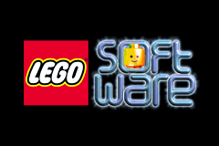

LEGO Racers 2 (Europe) (En,Fr,De,Es,It,Nl,Sv,Da)
EEPROM 4K
Cartridge Identity
- Game Code
ALRP(FamilyALR)- Header Title
LEGO RACERS- Maker / Revision
5Q/ rev0- ROM Size
- 8.0 MiB (8,388,608 B)
- Save Media
EEPROM 4K- SHA-256
d31c33508e52f16e61d613cdc389075f20a87ce0b68cfd3fe1abb1c0a58cfe3a- Engine / SDK Group
comm-004(98 families)
Screenshots


Observed Battery Save Layout
- Fill Byte & Active Size
0x00fill · 373–373 / 512 B active (entropy 1.64 bits/B)- Active Offset Ranges
0x9,0xB,0xD–0xF,0x4D,0x4F,0x8E–0x1B7,0x1BC–0x1FF(7 total)- ASCII Magic / Headers
- None detected
- Observed Variable Regions
- 0 bytes across 0 spans: None
- Candidate Checksum/Counter Spans
- None
Hardware MMIO Subsystems
ppu_display0x800b45c,0x800d058,0x800d188,0x800f5c0,0x8017b7c,0x801a54c
Regional Variants & Revisions (Family ALR)
- LEGO Racers 2 (USA) (En,Fr) (
ALRE, 8 MiB)